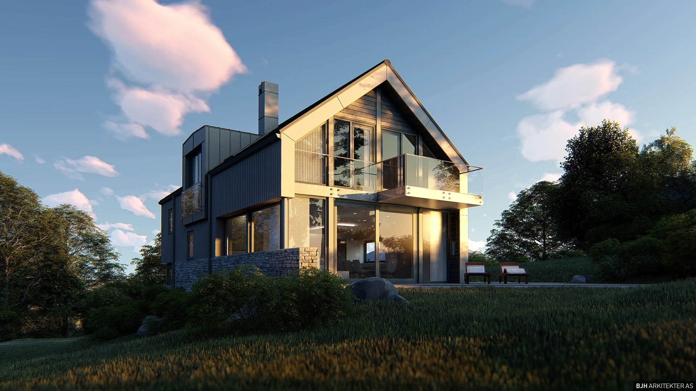
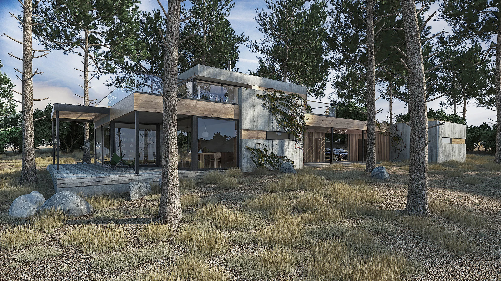
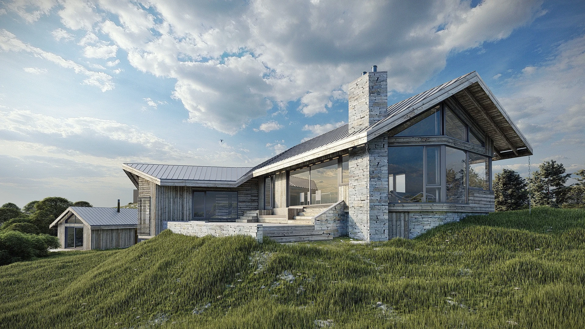
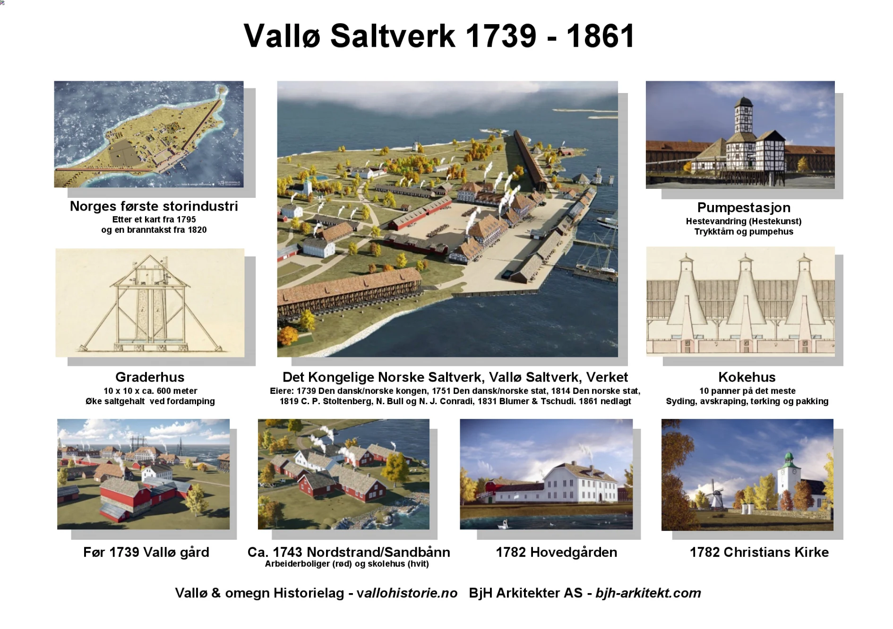
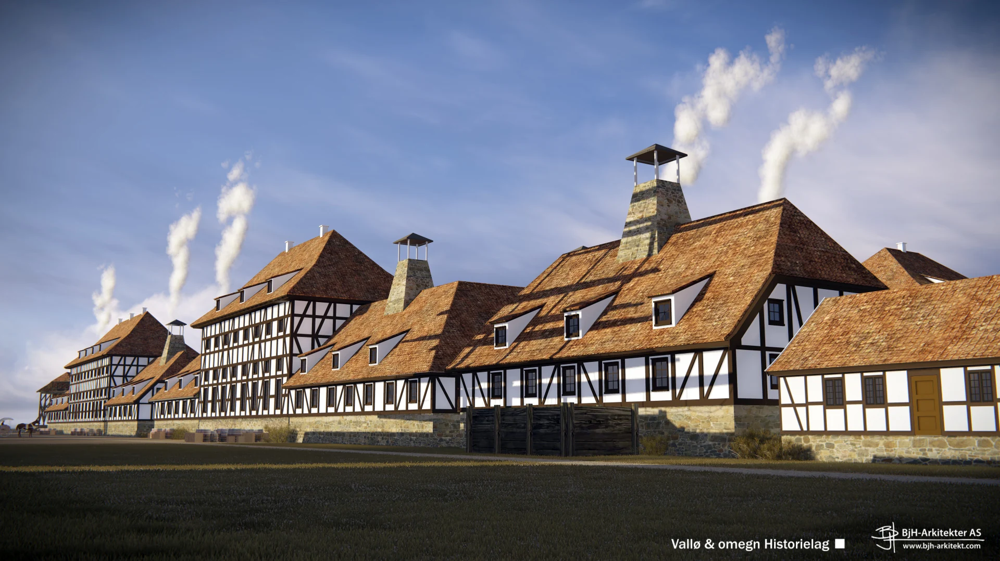
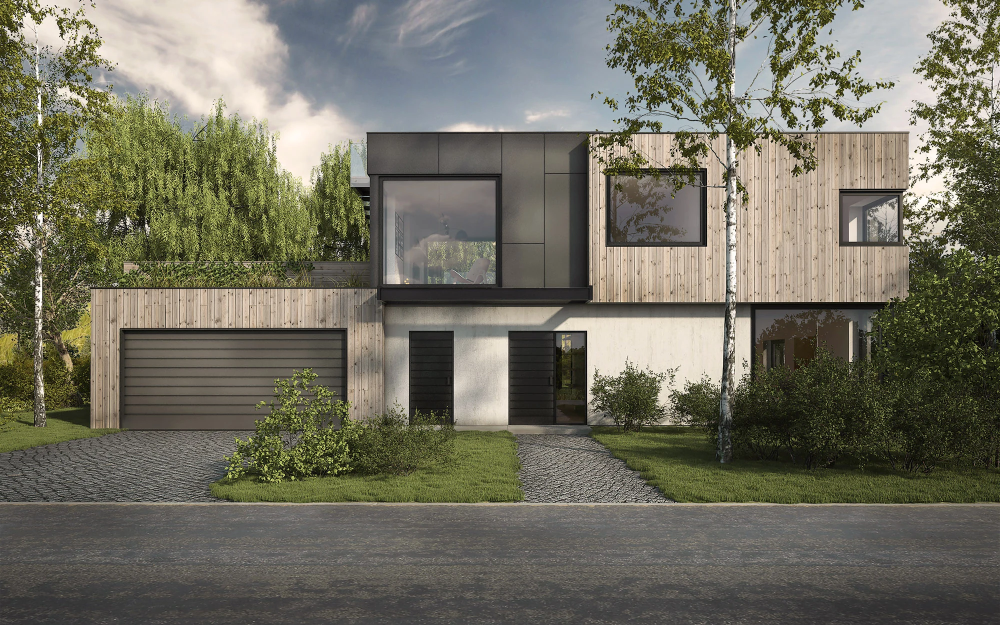

Vi begynner med å lytte.
Behovene dine og forutsetningene på stedet gir retning. En befaring og et kreativt møte er et godt utgangspunkt.



Fra den første tanken om et sted.
Til rommene du kaller dine.
En tomt. Et behov. En idé som ennå ikke har funnet formen. Vi hjelper deg å se mulighetene, og tar prosjektet videre fra de første skissene til gjennomføring.
Bli kjent med kontoretModerne linjer. Tradisjonelle former.
Arkitektur med ulike utgangspunkt.
Tegninger og visualiseringer gjør ideer synlige. De gir et felles utgangspunkt for å diskutere form, rom og hva prosjektet kan bli.
Slik tar vi prosjektet videre
Behovene dine og forutsetningene på stedet gir retning. En befaring og et kreativt møte er et godt utgangspunkt.
Gjennom skisser, tegninger og visualiseringer undersøker vi mulighetene og gjør prosjektet konkret.
Vi bistår med prosjektering og søknadsarbeid. Omfang og videre oppfølging tilpasses det enkelte prosjektet.

En digital rekonstruksjon av antatt bebyggelse, basert på et kart fra 1795 og eldre dokumentasjon.
Oppdag historien om ValløHistorisk datamodell / BJH Arkitekter
Vi holder til i Villa Møllebakken i Tønsberg. Herfra arbeider vi med små og mellomstore prosjekter i Vestfold og omegn, og med oppdragsgivere over hele landet via nettbasert samarbeid.